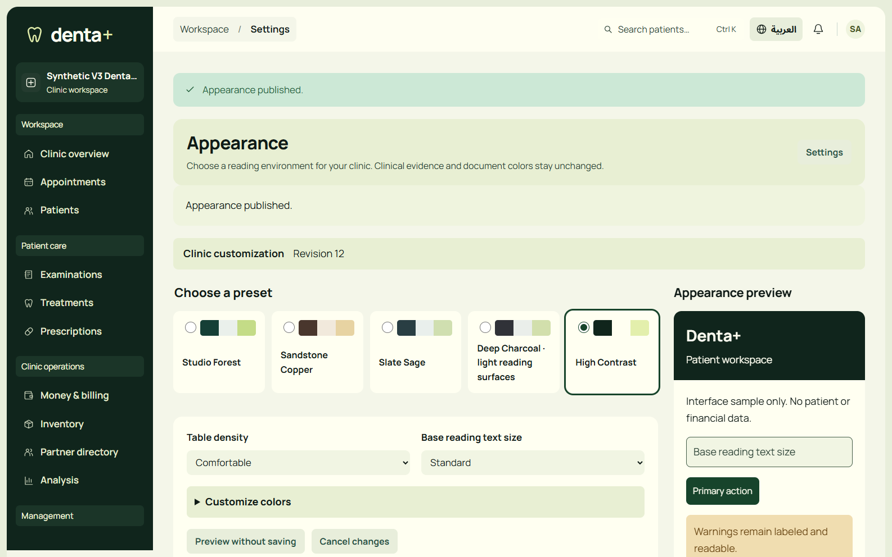
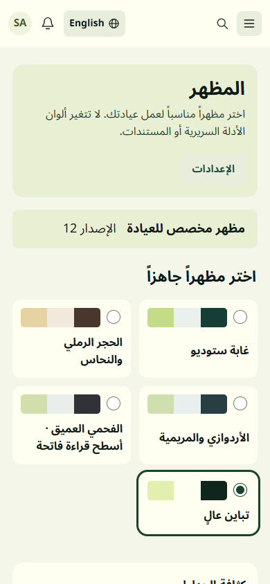
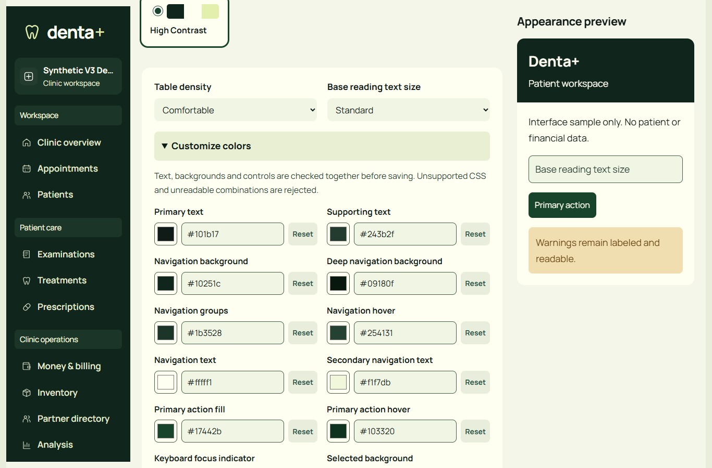

Studio appearance: actual local application
Development-only synthetic data. Theme feature remains OFF in shipped configuration. This is focused evidence, not a declaration of product-wide completion or independent acceptance.
Application source d21e2e2f5a38974374889402f195e2214f23f902. Acceptance and limitations.
1586x992: English native appearance editor, current high-contrast clinic preset.
390x844: actual Arabic RTL editor. Full archive stays outside source.
1366x900: actual native advanced controls, scoped sample, typed HEX and individual reset actions.